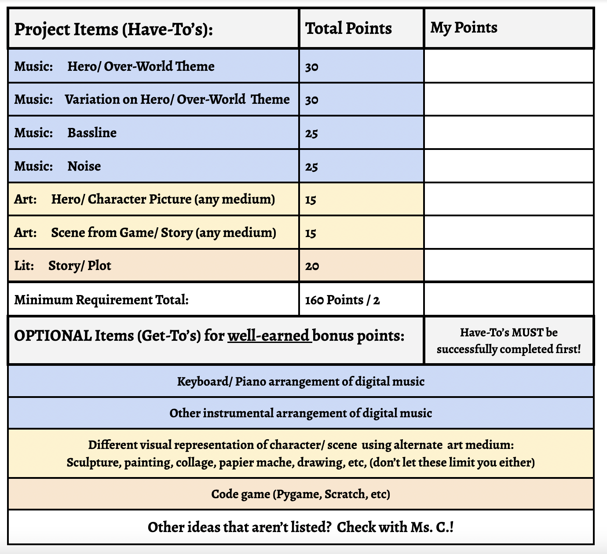

Two Person Project
A two-person project is one in which TWO STUDENTS from the same class are
responsible for the completion of the required elements AND for the full presentation.
Click here to see the detailed rubric for a TWO PERSON PROJECT
Remember, the "Have-To's" have to be completed first!

Some pros for working with one other student:
- You can share the workload.
- You can collaborate and learn with someone else.
Some cons for working with someone else:
- You HAVE to work together, so don't expect to get your way all the time.
- You may be working with someone who does not have the same work-ethic or vision as you.